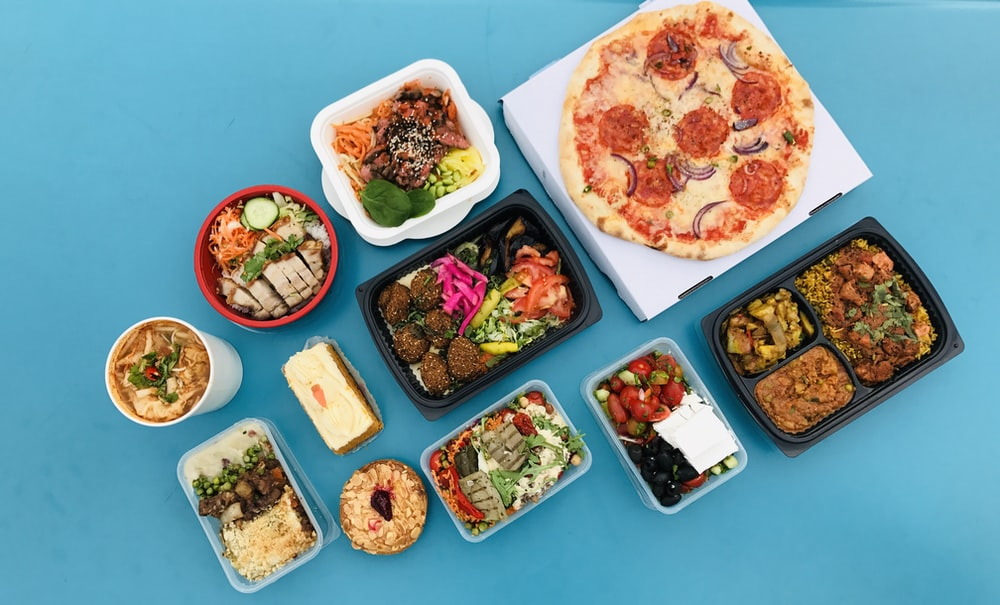
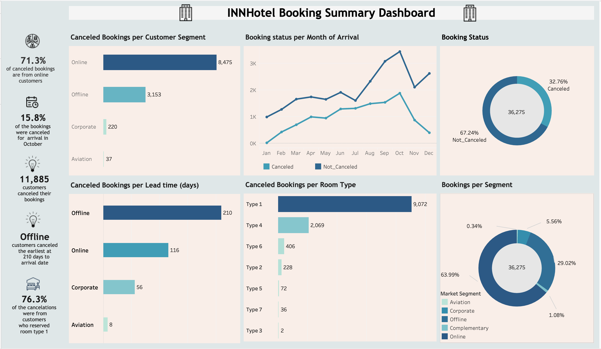

April 30, 2022
Performed exploratory data analysis using python libraries such as Numpy, Pandas, Seaborn and matplotlib to provide insights for Foodhub, a food aggregator company looking to get an idea about the demand of different restaurants which will help them in enhancing their customer experience.
I cleaned, visualized and analyzed the data and was able to provide insights such as the most profitable cuisines and restaurants, delivery trends during weekends and weekdays and lowest total order time. I also provided recommendations on how to improve their ratings and improve their delivery service.


Performed statistical analysis, a/b testing, and visualization to decide whether the new landing page of an online news portal (E-news Express) is effective enough to gather new subscribers or not. I used python libraries including Numpy, Pandas, Seaborn, Matplotlib and Scipy. I visualized the data, conducted exploratory data analysis and conducted hypothesis testing to address the statistical concerns of the business. Some issues addressed were deciding landing page is better, concluding whether language affects the choice of landing page, deciding which of the pages has a higher conversion rate etcetera.
Built a linear regression model to predict the price of used phones/tablets and identify factors that significantly influence it.
I used python libraries including numpy, pandas, matplotlib, seaborn, sklearn and statsmodels. I cleaned up the data, visualized and explored it and trained the data a few times before building the final linear regression model.
I was able to identify the key factors that influence the pricing and offer recommendations on how they can maximize their profit and take advantage of opportunities in the market.

Built Logistic regression model and decision tree models to predict whether or not a booking will be canceled and identify factors that significantly influence it. I used python libraries including numpy, pandas, matplotlib, seaborn, sklearn and statsmodels. I cleaned up the data, visualized, explored, analysed, and trained the data before building the final logistic regression model. Thereafter, I built a decision tree from the data set, pre-pruned by grid search hyper-parameter tuning and post pruned using minimal cost complexity pruning. I identified the key factors influencing the booking status and offered recommendations on policies they can implement to maximize profit in the event of a cancelation.

Built various machine learning models including bagging classifier, random forest classifier, adaboost, Gboost, Xgboost and Stacking classifier models to predict whether or not a visa application will be certified.
I used python libraries including numpy, pandas, matplotlib, seaborn, sklearn and statsmodels. I cleaned, visualized, explored and built models from the data, after which i tuned the hyper parameters to get the model with the best performance.
The most important factor affecting the decisions on visa applications in this case was observed to be the level of education.
September 16, 2022
Built and tuned six ensemble models to predict the failures of wind turbines and save maintenance cost. I performed undersampling and oversampling, tuned the models, identified the best model and built a pipeline to productionalize the final model.
I also Identified most important features of the model and offered some recommendations for saving maintenance cost.
October 11, 2022

Clustered various stock securities based on their Price change, Cash ratio, EPS, P/E ratios etc using Kmeans clustering and hierarchical clustering algorithms on python. I used the average distortion and silhouette scores to estimate the best number of clusters for K means clustering,
and thereafter used cophenetic correlations and dendograms to determine the best way to hierarchically cluster the data. After clustering the securities and identifying the characteristics and strong points of each cluster, I was able to offer recommendations on how to improve sock picking,
diversification of portfolios and generally, the financial services business for Trade and Ahead.

Dashboards done to visualize key insights from various datasets using Tableau

Dashboards done to visualize key insights from various datasets using Power BI